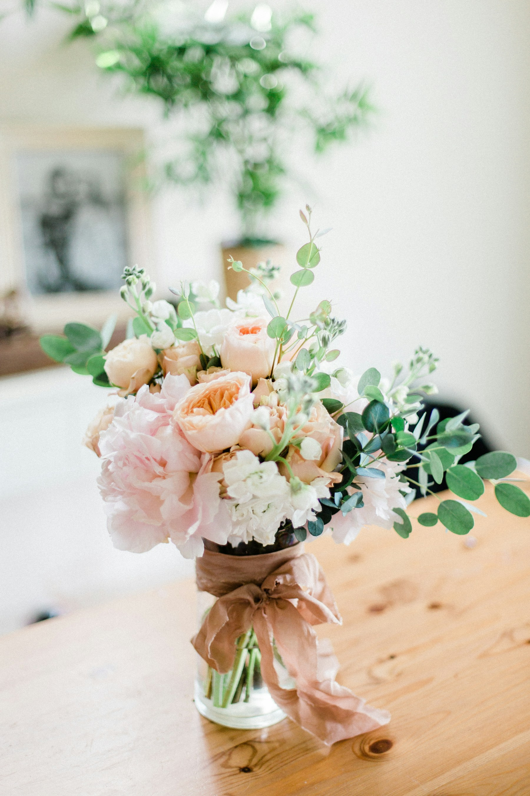
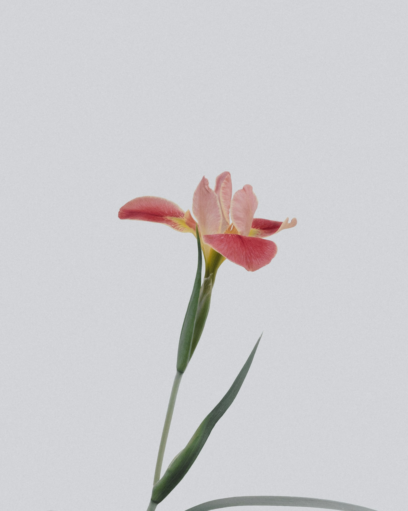

함께한 시간을 기념하는 날늘 곁에 있는 당신에게,
늘 곁에 있는 당신에게,
오늘은 꽃으로.
첫 기념일의 설렘도, 함께 쌓아 온 시간에 대한 고마움도. 받는 분이 좋아하는 색부터 떠올려 보세요. 전할 장소에 어울리는 꽃의 크기와 포장까지 함께 살펴보세요.
배우자·연인을 위한 기념일 꽃 선물
늘 곁에 있어 미처 못 한 “고마워”.
결혼기념일·연애 기념일에 전할 꽃을
비커밍에서 온라인으로 주문하고 배달해 보세요.


꽃을 건네고 싶은 순간
첫 기념일의 설렘도, 함께 쌓아 온 시간에 대한 고마움도. 받는 분이 좋아하는 색부터 떠올려 보세요. 전할 장소에 어울리는 꽃의 크기와 포장까지 함께 살펴보세요.
졸업사진 속 환한 얼굴 옆에 놓일 꽃. 손에 들었을 때의 크기와 포장을 살펴보세요. 축하할 순간에 함께할 수 있도록, 졸업식 일정에 맞춰 받을 수 있는지도 먼저 확인해 주세요.
그날을 위한 준비
기념일 저녁인가요, 졸업식 아침인가요?
받을 장소와 날짜를 정하고 배송 조건을 확인해 주세요.
집으로 보낼까요, 만나서 건넬까요? 배송 가능한 지역을 확인해 주세요.
그날을 놓치지 않도록, 언제까지 주문해야 하는지 먼저 확인해 주세요.
꽃을 받을 날짜와 시간을 정하기 전, 지정 가능한 범위를 확인해 주세요.
꽃값 외 배송비와, 받는 분이 자리를 비웠을 때의 수령 방법을 확인해 주세요.
꽃 선물, 어디서부터 시작할까요?
마음에 드는 꽃 사진이 있다면 함께 보내 주세요.
함께한 기념일, 빛나는 졸업식
희망 수령 날짜와 배송 지역
꽃 선물에 생각하고 있는 금액
좋아하는 상품이나 참고 사진
꽃을 받는 그 순간을 떠올려 보세요
다가오는 기념일은 언제인가요?
선물할 날짜·배송 지역·예산을 담아 문의해 주세요.